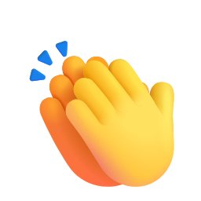
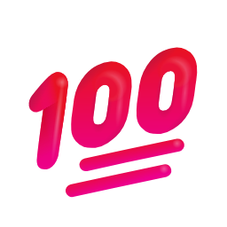

팀장
팀장
1점
1점
BEBE
로그인 API 구현진행 중 11/27까지
FEFE
메인 화면 퍼블리싱
1일 밀림
1일 밀림
01
팀원별 보드
누가 뭘, 언제까지 하는지 한 화면에서 보여요. 주간, 월간, 연간으로 바꿔 볼 수 있어요.

| No. | 페이지 | 의뢰인 | 쓰는 곳 | |
|---|---|---|---|---|
| 01 | 팀 태스크 DB | 5인 창업팀 대표 | 웹 | |
| 02 | 하루 한 장 사진 캘린더 | 대학생 | 아이패드, 웹 |
지라 대신, 5인 창업팀이 매일 쓰는 우리 팀만의 업무 보드

고르게 나눠져 있고 밀린 업무도 없어요
이번 주 업무 4건 중 1건 완료“지라는 팀원들이 너무 복잡해할 것 같았어요.창업팀 대표
누가 뭘, 언제까지 하는지 쉽게 보고 싶었어요.”
기능을 늘리는 대신, 팀에 꼭 필요한 것만 남겼어요. 팀원별로 맡은 업무와 마감을 한 화면에 보여주고, 끝낸 업무에는 점수와 자기 평가, 산출물 링크가 쌓이게 했어요. 서로 칭찬 스티커를 붙이며 가볍게 챙길 수 있도록요.
누가 뭘, 언제까지 하는지 한 화면에서 보여요. 주간, 월간, 연간으로 바꿔 볼 수 있어요.
업무가 한 사람에게 몰리거나 마감이 밀리면 바로 알려줘요.
받은 스티커

1 1끝낸 업무엔 점수가 쌓이고, 팀원끼리 스티커와 댓글로 챙겨요.
하루에 사진 한 장, 채우기만 하면 끝나는 캘린더
“하루 한 장 사진으로 채우는 캘린더,대학생 의뢰인
iOS Core로 만들어 주세요.”
날짜 칸을 누르고 사진 한 장을 고르면 끝이에요. 메모도, 위젯도, 꾸미기 설정도 전부 뺐어요. 한 달이 지나면 달력이 그대로 사진 앨범이 돼요.
한 달이 사진으로 채워지는 달력. 오늘은 테두리로 표시돼요.
오늘 칸을 누르고 사진을 고르면 채워져요. 그게 전부예요.
아이패드와 폰, 웹 어디서든 같은 화면을 열어요.